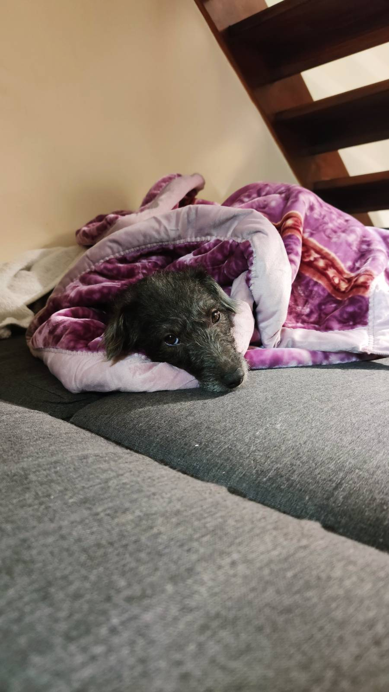

Kluska the freak dog that thinks she's a cat

She's awfully lazy and disobidient. She loves climbing so I assume she was a cat in her previous life. Her favorite food is:
- Salad tomato
- Red peppers
- Apples
What should we think about it?
- Looks like she's vegan
- But she also eat beef steaks
Look here to see another example of such crazy dog